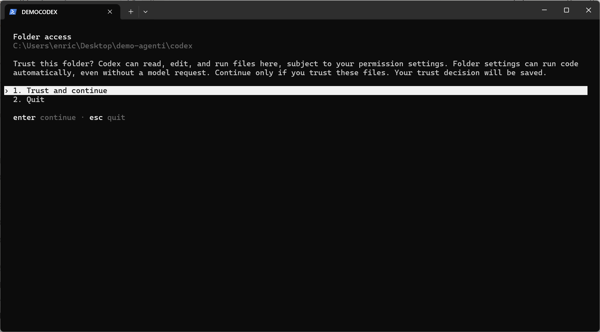
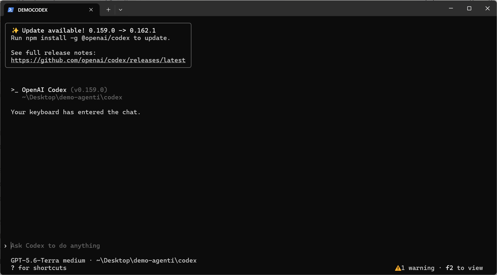
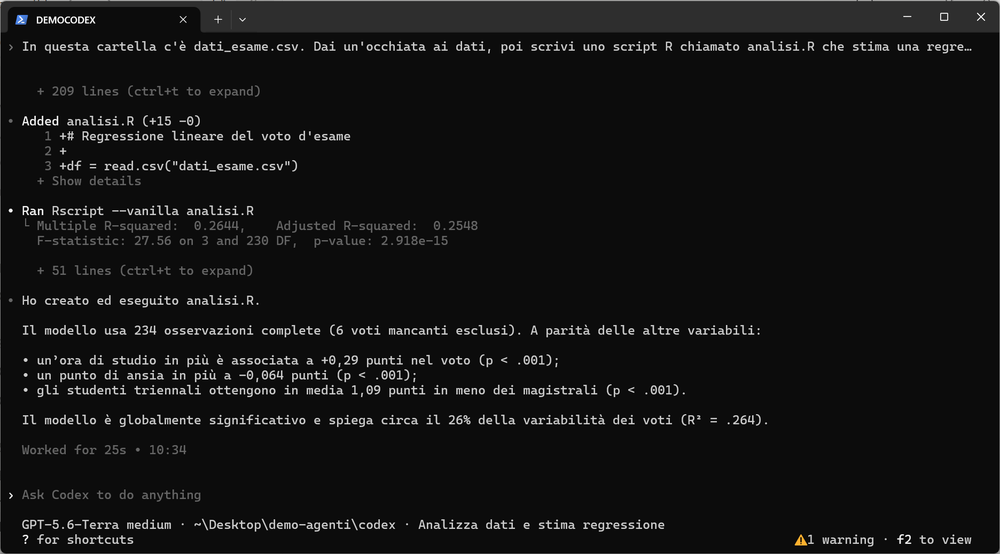
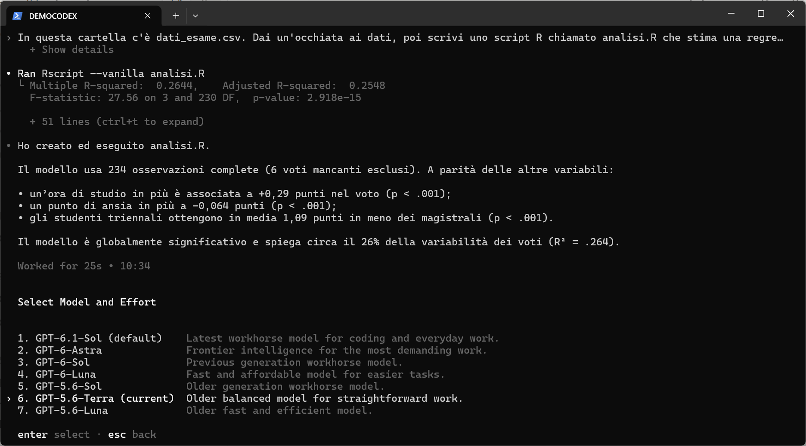
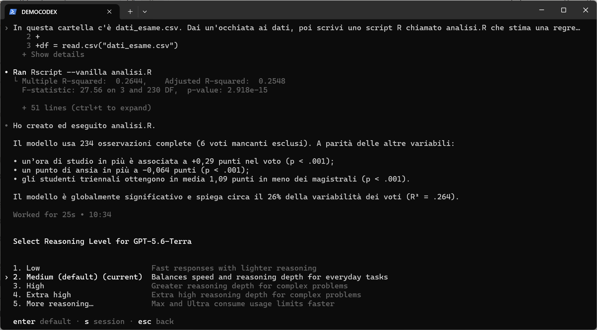
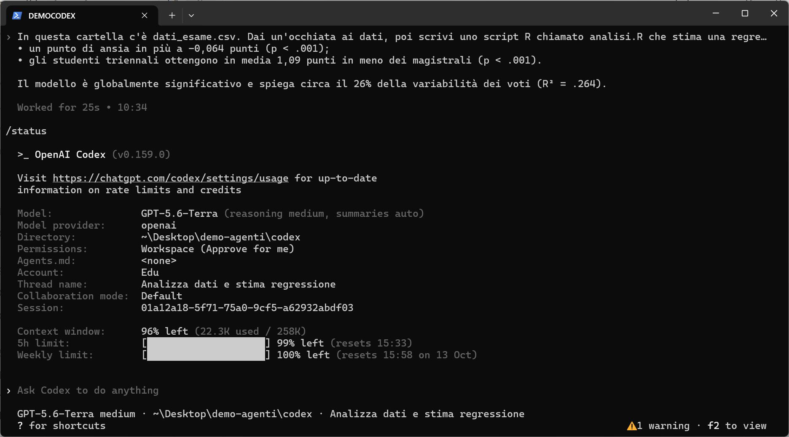
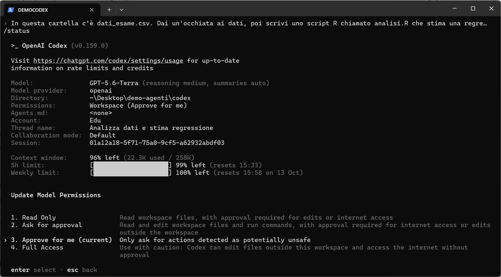
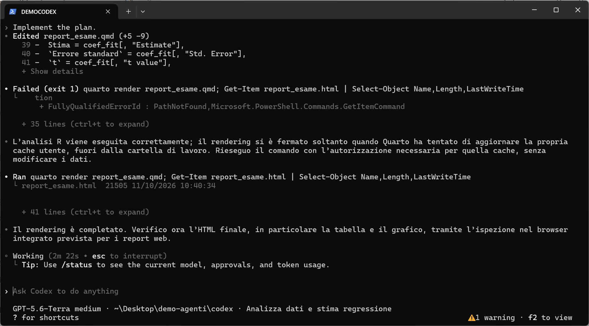
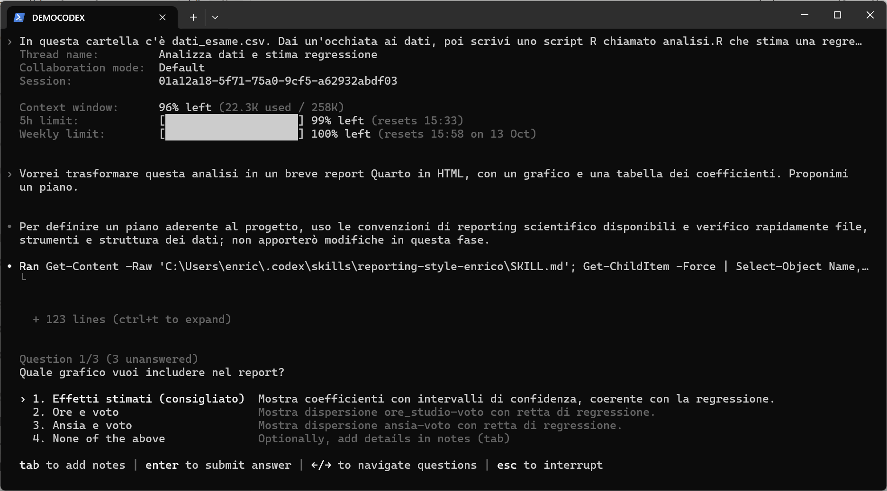
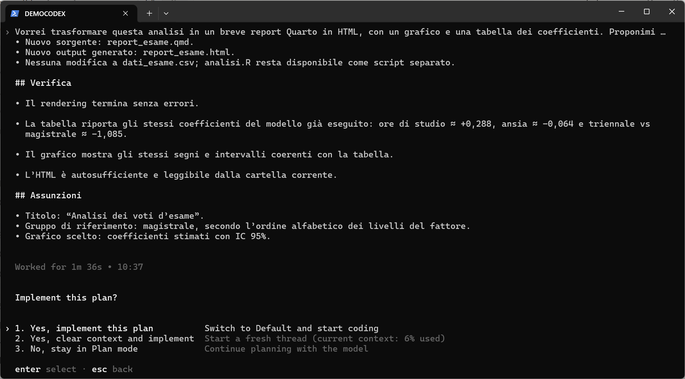

← Torna alla parte generale · Vai alla guida a Claude Code
Questa guida mostra i primi passi con Codex CLI di OpenAI su Windows (versione usata: 0.159.0, ottobre 2026), con un account ChatGPT Edu fornito dall’ateneo. Su macOS e Linux cambia solo il comando di installazione. Le schermate vengono da una sessione reale, nella stessa cartella di prova usata per la guida a Claude Code.
Obiettivi della guida
- Installare Codex e fare il login.
- Dare la prima richiesta su un progetto.
- Scegliere modello e livello di ragionamento.
- Controllare i limiti di utilizzo residui.
- Capire permessi e plan mode.
Requisiti
- Un account ChatGPT con piano Plus, Pro, Business, Edu o Enterprise (vedi la parte generale sui costi). Se il vostro ateneo fornisce ChatGPT Edu, potete usare quello.
- Windows, macOS o Linux.
- Consigliato: Git (vedi il tutorial su Git).
Installazione
Su Windows, in PowerShell:
powershell -ExecutionPolicy ByPass -c "irm https://chatgpt.com/codex/install.ps1 | iex"
Su macOS / Linux:
curl -fsSL https://chatgpt.com/codex/install.sh | sh
In alternativa, se avete già Node.js, su qualsiasi sistema:
npm install -g @openai/codex
Chiudete e riaprite il terminale e verificate con codex --version. Codex segnala da solo quando è disponibile un aggiornamento e propone di installarlo.
Primo avvio
Aprite il terminale nella cartella del progetto e scrivete:
codex
La prima volta vi chiede di accedere: scegliete Sign in with ChatGPT e completate il login nel browser. Poi, per ogni nuova cartella, Codex chiede se vi fidate del suo contenuto:

Rispondete sì solo per cartelle vostre o di cui conoscete il contenuto: le impostazioni di un progetto possono eseguire codice. Fatto questo si arriva alla schermata principale:

La prima richiesta
Stessa richiesta data a Claude Code:
In questa cartella c’è dati_esame.csv. Dai un’occhiata ai dati, poi scrivi uno script R chiamato analisi.R che stima una regressione del voto su ore_studio, ansia e gruppo, eseguilo e spiegami i risultati in poche righe.

analisi.R (si vedono le righe aggiunte), lo ha eseguito con Rscript e ha riassunto i risultati
In 25 secondi Codex ha esplorato i dati, scritto lo script, lo ha eseguito e ha riassunto i risultati, identici a quelli ottenuti da Claude Code. Ogni passaggio è visibile: il file aggiunto (Added analisi.R (+15 -0)), il comando eseguito (Ran Rscript --vanilla analisi.R) e il suo output. Con Ctrl+T si espande il dettaglio completo. Per interrompere l’agente mentre lavora si preme Esc.
Scegliere modello e livello di ragionamento
Il comando /model apre il selettore dei modelli:

I nomi cambiano spesso, ma le descrizioni aiutano. Il modello di default è quello consigliato per il lavoro quotidiano; ci sono modelli più potenti per i compiti difficili e modelli più veloci ed economici per quelli semplici. Scelto il modello, Codex chiede il livello di ragionamento (reasoning effort):

Con Invio la scelta diventa il default; premendo s vale solo per la sessione corrente. Si può anche indicare il modello all’avvio con codex -m <nome-modello>. Il consiglio è lo stesso dato per Claude Code: partite dal default con ragionamento medium, alzatelo solo per i problemi difficili.
Controllare l’utilizzo residuo
Il comando /status mostra la configurazione della sessione e i limiti residui:

/status: modello, permessi, tipo di account (qui Edu), contesto usato e, in fondo, i limiti sulla finestra di 5 ore e settimanale
Le ultime tre righe sono le più utili. Context window indica quanto della “memoria di lavoro” della conversazione è occupato. 5h limit e Weekly limit indicano quanto resta dei limiti del vostro piano e quando si azzerano. Il dettaglio aggiornato, inclusi eventuali crediti, è sulla pagina chatgpt.com/codex/settings/usage. I limiti valgono per tutte le interfacce di Codex, non solo per il terminale. Raggiunto un limite, Codex si ferma fino all’azzeramento, salvo che il piano preveda crediti aggiuntivi (vedi la parte generale; con un account Edu dipende dall’ateneo).
Permessi
Il comando /permissions stabilisce cosa Codex può fare senza chiedere:

- Read Only: legge i file, ma chiede il permesso per qualsiasi modifica o accesso a internet.
- Ask for approval: legge, modifica ed esegue comandi nella cartella di lavoro; chiede per internet e per file fuori dalla cartella.
- Approve for me: chiede solo per le azioni giudicate potenzialmente pericolose; le altre vengono valutate e approvate automaticamente.
- Full Access: nessuna richiesta, anche fuori dalla cartella e su internet. Da usare con molta cautela.
Codex lavora dentro una sandbox: di default può scrivere solo nella cartella del progetto. Nell’esempio si vede bene. Il rendering del report Quarto è fallito perché Quarto doveva aggiornare una propria cache fuori dalla cartella di lavoro. Codex ha riconosciuto il problema, ha richiesto l’autorizzazione (approvata automaticamente in modalità Approve for me) e ha rieseguito il comando:

Plan mode
Con Shift+Tab, oppure con il comando /plan, si attiva la Plan mode (l’indicazione compare in basso a destra). In questa modalità Codex esplora e progetta, ma non modifica nulla. Ho chiesto:
Vorrei trasformare questa analisi in un breve report Quarto in HTML, con un grafico e una tabella dei coefficienti. Proponimi un piano.
Prima di proporre il piano, Codex ha fatto una cosa interessante: ha letto da solo la mia skill sullo stile dei report scientifici (reporting-style-enrico, vedi la parte generale) e poi mi ha posto alcune domande:

Risposte le domande, presenta il piano: file che verranno creati, verifiche che farà, assunzioni adottate. A quel punto si sceglie se implementarlo:

Il report risultante è mostrato nella parte generale, accanto a quello di Claude Code.
Riprendere una conversazione
Le conversazioni restano salvate sul vostro computer. Se chiudete il terminale per sbaglio, o se il lavoro si è interrotto per un limite di utilizzo, potete riprendere da dove eravate, con tutto il contesto. Dalla stessa cartella:
codex resume --last # riprende l'ultima conversazione
codex resume # mostra l'elenco delle conversazioni passate e ne fa scegliere unaDentro una sessione già aperta, /resume mostra lo stesso elenco.
Altri comandi utili
| Comando | A cosa serve |
|---|---|
/init |
Crea un file AGENTS.md con le istruzioni del progetto, che Codex legge a ogni avvio. |
codex resume |
Riprende una conversazione passata (codex resume --last per l’ultima). |
/new |
Nuova conversazione nella stessa sessione. |
/compact |
Riassume la conversazione per liberare contesto. |
/review |
Revisione delle modifiche fatte, alla ricerca di problemi. |
/mcp |
Mostra i connettori (server MCP) configurati. |
codex exec "..." |
Esegue un compito senza interfaccia interattiva (utile in script). |
/quit |
Chiude Codex. |
Digitando / compare l’elenco completo dei comandi.
Una nota su ChatGPT Edu
Con l’account Edu di ateneo Codex funziona bene per tutto il lavoro in locale mostrato qui. Alcune funzioni però possono essere disattivate dall’amministrazione: in questo momento, ad esempio, l’uso del browser da parte di Codex non è disponibile perché bloccato per scelta dell’ateneo. Se una funzione non compare o non funziona, è probabile che dipenda da queste impostazioni e non da un vostro errore.
← Torna alla parte generale · Vai alla guida a Claude Code